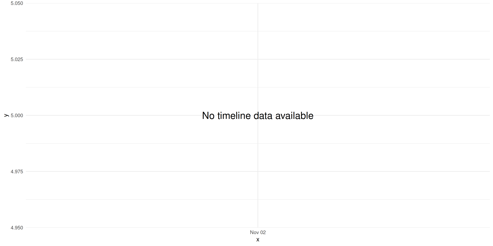
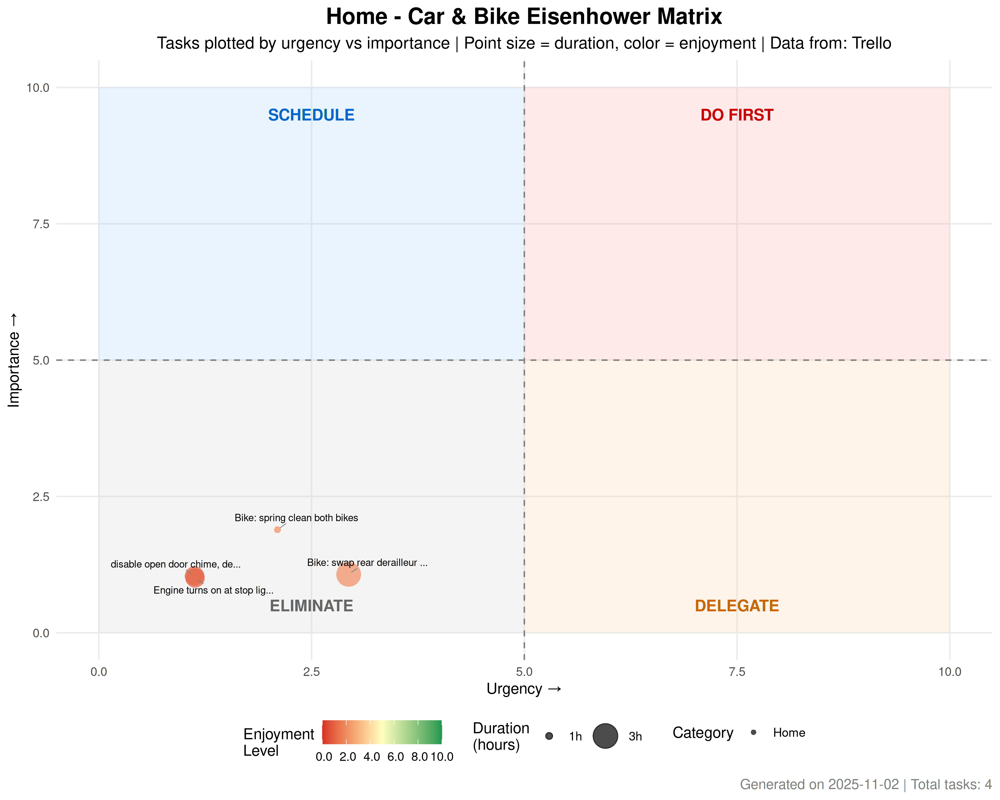

Personal Time Management Dashboard
Eisenhower Matrix Analysis
Automated Pipeline
2025-09-21
Overall
Executive Summary
This dashboard provides an automated analysis of your personal task management using the Eisenhower Matrix approach. Tasks are plotted by urgency (x-axis) vs importance (y-axis), with point size representing duration and color representing enjoyment level.
Key Metrics
| Metric | Home | Work |
|---|---|---|
| Total Tasks | 44.0 | 0 |
| Average Urgency | 2.2 | 0 |
| Average Importance | 2.6 | 0 |
| Total Hours | 304.0 | 0 |
| Average Enjoyment | 3.1 | 0 |
Data Sources
| source | Tasks | Avg Urgency | Avg Importance | Total Hours |
|---|---|---|---|---|
| Trello | 44 | 2.2 | 2.6 | 304 |
Combined Eisenhower Matrix
The main visualization shows all tasks plotted on the classic Eisenhower Matrix:
- Do First (Red): Urgent and Important
- Schedule (Blue): Important but Not Urgent
- Delegate (Orange): Urgent but Not Important
- Eliminate (Gray): Neither Urgent nor Important

Combined Quadrant Analysis
| Quadrant | Count | Avg Duration | Total Duration | Avg Enjoyment | % of Tasks |
|---|---|---|---|---|---|
| Eliminate | |||||
| (Not Urgent, Not Important) | 32 | 6.2 | 199 | 3.1 | 72.7 |
| Schedule | |||||
| (Important, Not Urgent) | 5 | 13.4 | 67 | 4.2 | 11.4 |
| Do First | |||||
| (Urgent & Important) | 4 | 5.8 | 23 | 2.5 | 9.1 |
| Delegate | |||||
| (Urgent, Not Important) | 3 | 5.0 | 15 | 2.7 | 6.8 |
Combined Timeline View
This view shows tasks over time based on their due dates:

Combined Task List
Combined Recommendations
## ### Key Insights
##
## - **High Priority Tasks**: You have 4 tasks in the 'Do First' quadrant
## - **Potential Elimination**: Consider reviewing 32 tasks in the 'Eliminate' quadrant
## - **Total Workload**: Approximately 304 hours of work identified
## - **Highest Enjoyment**: Tasks in Schedule
## (Important, Not Urgent) have the highest average enjoyment rating
##
## ### Action Items
##
## 1. Focus on 'Do First' quadrant tasks with high urgency and importance
## 2. Schedule dedicated time for 'Schedule' quadrant tasks to prevent them becoming urgent
## 3. Consider delegating or automating tasks in the 'Delegate' quadrant
## 4. Evaluate whether tasks in the 'Eliminate' quadrant are truly necessaryWork
Work Eisenhower Matrix
Work tasks from Marine Calendar & MarSci Projects board:
No work tasks available. Add tasks to Marine Calendar or MarSci Projects Trello board.
Work Quadrant Analysis
## No work quadrant analysis availableWork Timeline View
No work timeline available
Work Task List
## No work tasks available to displayWork Recommendations
## No work tasks found. Add tasks to Marine Calendar or MarSci Projects Trello board.Home
Home Eisenhower Matrix
Home tasks from Admin Calendar & Meg & Si Todo board:

Home Quadrant Analysis
| Quadrant | Count | Avg Duration | Total Duration | Avg Enjoyment | % of Tasks |
|---|---|---|---|---|---|
| Eliminate | |||||
| (Not Urgent, Not Important) | 32 | 6.2 | 199 | 3.1 | 72.7 |
| Schedule | |||||
| (Important, Not Urgent) | 5 | 13.4 | 67 | 4.2 | 11.4 |
| Do First | |||||
| (Urgent & Important) | 4 | 5.8 | 23 | 2.5 | 9.1 |
| Delegate | |||||
| (Urgent, Not Important) | 3 | 5.0 | 15 | 2.7 | 6.8 |
Home Timeline View

Home Task List
Home Tasks by List
Garden
Summary: 19 tasks, 151 hours total
Top Priority Tasks:
- Fix hot tub foam cover, seal ( Do First (Urgent & Important) )
- Photo a day project, CritterCams ( Delegate (Urgent, Not Important) )
- Cut boughs from cherry plum (& other trees?) ( Schedule (Important, Not Urgent) )
- kill front lawn weeds ( Eliminate (Not Urgent, Not Important) )
- Rear patio terracotta & glazed tiles like Hearst castle ( Eliminate (Not Urgent, Not Important) )
House
Summary: 11 tasks, 43 hours total
Top Priority Tasks:
- Seal laundry room vent hole ( Do First (Urgent & Important) )
- Video doorbell ( Schedule (Important, Not Urgent) )
- Fix dad sunnies bridges ( Eliminate (Not Urgent, Not Important) )
- Sharpen kitchen knives ( Eliminate (Not Urgent, Not Important) )
- Fix MsPacman ( Eliminate (Not Urgent, Not Important) )
House Large/DIY
Summary: 8 tasks, 88 hours total
Top Priority Tasks:
- Fire safety Plan ( Do First (Urgent & Important) )
- Upgrade internal doors soundproofing ( Delegate (Urgent, Not Important) )
- Grey water capture system ( Schedule (Important, Not Urgent) )
- Handrails, bathroom and front yard ( Schedule (Important, Not Urgent) )
- Organise ( Eliminate (Not Urgent, Not Important) )
Car & Bike
Summary: 4 tasks, 8 hours total

Top Priority Tasks:
- Bike: swap rear derailleur & gears ( Eliminate (Not Urgent, Not Important) )
- Bike: spring clean both bikes ( Eliminate (Not Urgent, Not Important) )
- disable open door chime, dealership ( Eliminate (Not Urgent, Not Important) )
- Engine turns on at stop lights for no reason ( Eliminate (Not Urgent, Not Important) )
Computer
Summary: 2 tasks, 14 hours total
Top Priority Tasks:
- Guy health project ( Do First (Urgent & Important) )
- Sell Stuff ( Delegate (Urgent, Not Important) )
Home Recommendations
## ### Home Key Insights
##
## - **High Priority Home Tasks**: You have 4 home tasks in the 'Do First' quadrant
## - **Home Tasks to Review**: Consider reviewing 32 home tasks in the 'Eliminate' quadrant
## - **Total Home Hours**: Approximately 304 hours of personal work identifiedReport generated automatically on 2025-09-21 12:14:09.329911 using the targets pipeline. Data refreshes every 6 hours.